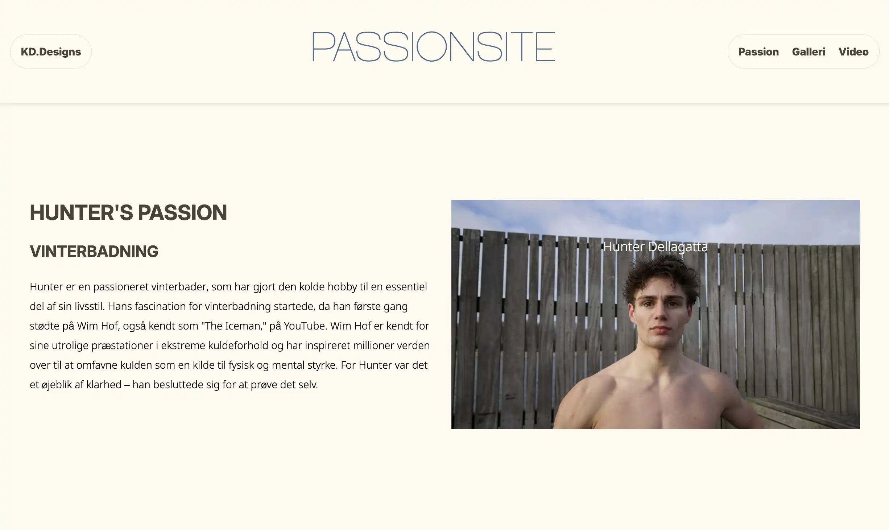
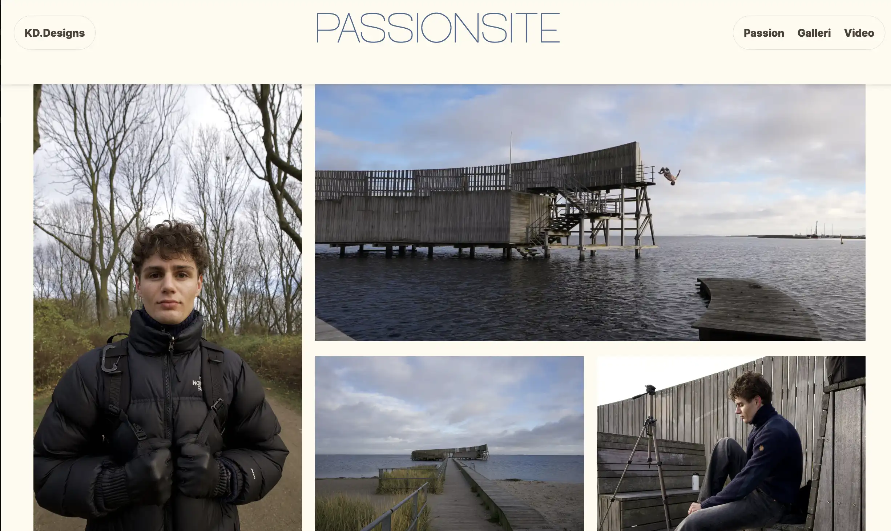
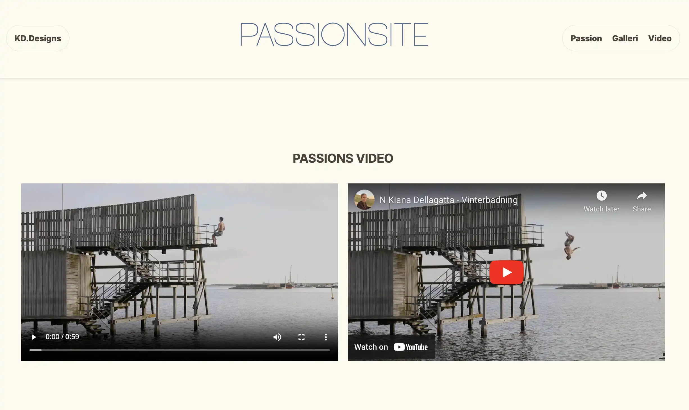
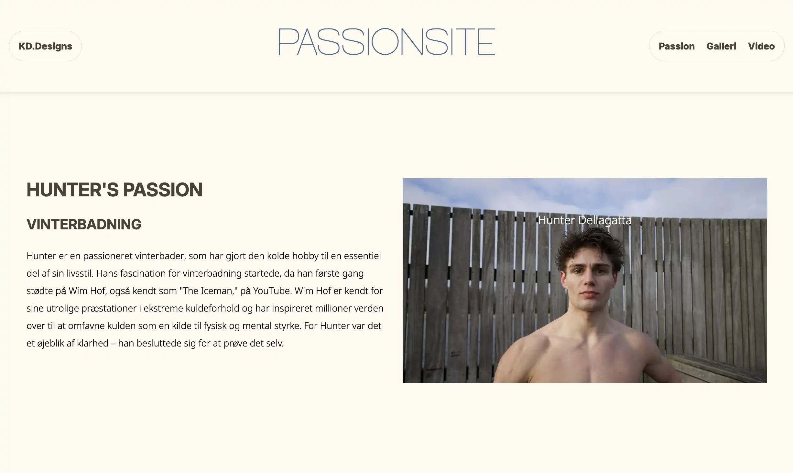
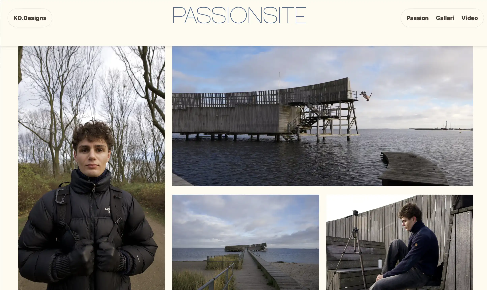
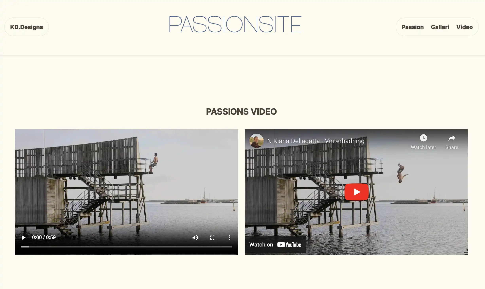

TEMA 5
Grundlæggende Indhold
Passionsite
I dette tema fik jeg en grundlæggende indførsel i indholdsproduktion, herunder præproduktion, selve produktionen og postproduktionen. Jeg arbejdede med optagelse af video ved hjælp af smartphonekameraer og ekstern lyd, og brugte Premiere Pro og Audition til redigering. Derudover arbejdede jeg også med animeret vektorgrafik ved hjælp af LottieFiles, hvilket gav mig indsigt i, hvordan animation kan integreres i digitalt indhold.
Projekt beskrivelse
I denne opgave skulle jeg producere indhold og udvikle et simpelt site om en person med en passion. Formålet var at lære at planlægge, producere og efterbehandle forskellige typer indhold ved hjælp af programmer fra Adobe CC. Derudover skulle jeg kode et øvelsessite, hvor jeg fik mulighed for at afprøve og genopfriske de responsive layoutteknikker, jeg tidligere har lært.
Dokumentation af processen
Indsamling af video og billeder
I dette projekt udviklede jeg en hjemmeside ved hjælp af HTML, CSS og JavaScript, baseret på en digital prototype og et layoutdiagram. Dette gav mig praktisk erfaring med at omsætte design og struktur til en funktionel og interaktiv brugergrænseflade, samtidig med at jeg lærte at arbejde systematisk med kodning og designprincipper.
 




